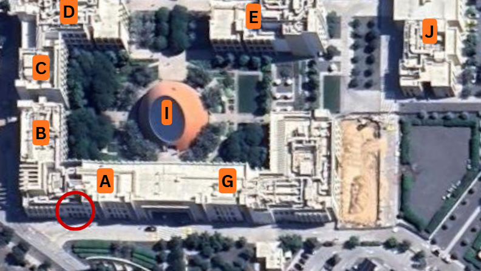
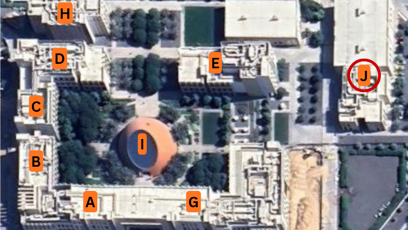
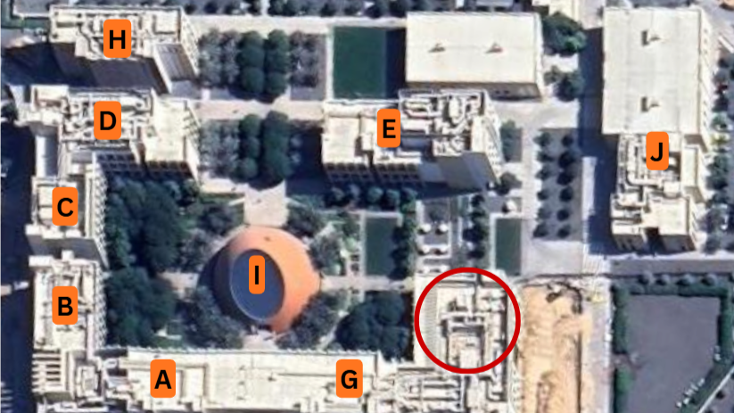

Introduction
Student life brings with it a unique set of opportunities and challenges. Balancing academic demands, social experiences, and personal responsibilities can make it difficult to prioritize health and wellness. This guide is designed to help RIT Dubai students navigate those challenges by providing practical, accessible information on the resources and habits that support a healthier university experience.Purpose of the Guide
This guide serves as a centralized resource for RIT Dubai students seeking information on health and wellness. Rather than searching across multiple platforms, students can use this guide to quickly find information on campus health services, fitness facilities, dining options, mental health support, and general wellness strategies. The goal is not to be prescriptive, but to make it easier for students to make informed decisions about their own wellbeing throughout their time at RIT Dubai.
Importance of Student Health and Wellness
Student health is about far more than avoiding illness. Research highlights that human health has a profound effect on physical performance, productivity, and overall quality of life. For university students in particular, health plays a direct role in academic performance and personal development. Studies have shown that students with chronic health conditions or poor lifestyle habits face challenges that can affect both their studies and long-term wellbeing. Structured wellness programs have demonstrated measurable improvements in students' physical health indicators, including cardiovascular and respiratory function, reinforcing the idea that intentional attention to health during university years yields meaningful results. Developing healthy habits now is therefore not just beneficial for the present but rather an investment in long-term physical and mental wellbeing.
Overview of Topics Covered
This guide covers a broad range of health and wellness topics relevant to RIT Dubai students. It begins with an overview of on-campus health and counseling followed by information on fitness facilities and active lifestyle opportunities available at RIT Dubai. The guide also covers food and nutrition options both on and off campus, as well as resources for students while studying remotely. It concludes with general tips on sleep, stress management, time management, and knowing when to seek help.
On-Campus Health and Wellness Resources
RIT Dubai provides students with a range of health and wellness resources designed to support their physical and mental wellbeing throughout their time at university. Knowing what is available and how to access it can make a real difference, especially during stressful periods of the academic year.
Medical and Health Services
All RIT Dubai students are enrolled in the university's student health insurance plan through Daman Insurance, which covers medical care and, where applicable, mental health support, including medication. Students covered by a different provider should contact their insurance company directly to understand their coverage and refer to the Student Handbook for additional information.
In addition, the RIT Dubai on-campus clinic is located in Block A and is available to support students with basic medical needs and general health concerns. It is staffed by a qualified nurse and provides essential primary care services such as first aid, basic consultations, and initial medical support before referring students to external healthcare providers if needed.
On-Campus Clinic Hours (Block A)
Mon–Thu: 9:00 AM – 5:00 PM | Fri: 8:00 AM – 12:00 PM
Closed Saturdays & Sundays.
The map below shows the clinic location within the RIT Dubai campus (marked with a red circle near Block A).

The RIT Dubai Health Services also sends regular emails to students with health updates, wellness tips, and information about initiatives. Students are encouraged to check their university inbox to stay informed about these communications.
Counseling and Mental Health Support
All RIT Dubai students have access to the Student Counselor, who offers individual and group counseling in a confidential and supportive environment. Students can bring any concerns related to academic pressure, anxiety, stress, relationships, or personal wellbeing. Support options include single-session counseling, short-term weekly counseling, and group mental health workshops. A full list of external mental health resources across the UAE is also available on the RIT Dubai website.
Fitness and Physical Wellness
Staying active is one of the most effective ways to support both physical and mental health during university. RIT Dubai offers students a variety of on-campus fitness facilities and sports programs, making it convenient to build exercise into daily life regardless of your schedule or fitness level.
Campus Fitness Facilities
RIT Dubai's sports complex, located in Block J, houses a range of modern fitness facilities available to all enrolled students. The main gym is a large, fully equipped space featuring cardio machines such as treadmills and rowing machines, a dedicated free weights area with dumbbells and barbells, cable and resistance machines, and an open functional training zone with turf for sled pushes and agility drills. Whether you are new to the gym or an experienced lifter, the facility is well-suited for a variety of training goals.


In addition to the main gym, there is also a dedicated ladies-only fitness studio, providing a private and comfortable space equipped with cardio machines, free weights, resistance bands, yoga mats, and stability balls. This space is available exclusively for female students and staff.
The map below shows the sports complex location within the RIT Dubai campus (indicated with a red circle near Block J).

Fitness Center Hours
Mon–Thu: 11:00 AM – 7:00 PM | Fri: 8:00 AM – 1:00 PM
Ladies Only Studio Hours
Mon–Thu: 9:00 AM – 7:00 PM | Fri: 8:00 AM – 1:00 PM
Closed Saturdays & Sundays.
A valid RIT Dubai student ID is required to access all sports complex facilities — no ID, no entry. Make sure to carry your card whenever you plan to visit.
Sports and Athletics Programs
Beyond the gym, RIT Dubai offers a range of sports facilities and student-led clubs that make it easy to stay active in a social and competitive environment. The sports complex includes a full-size multipurpose indoor court used for basketball, volleyball, and badminton, as well as two glass-backed squash courts. Outdoors, students have access to a FIFA-standard artificial turf football pitch, which is regularly used for casual games and organized tournaments.


Multipurpose Hall & Squash Courts Hours
Mon–Thu: 9:00 AM – 5:00 PM | Fri: 8:00 AM – 1:00 PM
Closed Saturdays & Sundays.
• Athletic attire is mandatory — no jeans or cargo pants.
• Appropriate footwear only — no crocs, slides, or sandals.
• No eating or drinking inside the multipurpose hall.
• No smoking or vaping anywhere in the sports complex.
Students can also get involved through RIT Dubai's active student clubs, which offer a great way to pursue specific sports and interests while connecting with peers who share the same passion. Current sports and wellness-related clubs include:
- Running Club — organizes regular group runs both on and around campus, welcoming all fitness levels from casual joggers to those training for races.
- Powerlifting Club — brings together students interested in strength training, with a focus on the squat, bench press, and deadlift. Members train together and support each other in developing proper technique and building strength progressively.
- Chess Club — offers a space for strategic thinking and friendly competition, hosting regular sessions and inter-university tournaments.
Active Lifestyle Opportunities
Staying active does not have to mean spending time in the gym. Dubai Silicon Oasis (DSO), where RIT Dubai is located, offers several accessible options for students who prefer to exercise outdoors or explore the city.
The DSO area features a dedicated cycling and walking track that runs through the community, making it a pleasant option for an evening walk, jog, or cycle ride. The relatively quiet roads and shaded pathways in the early morning and late evening hours make outdoor exercise manageable even during the warmer months.
For students looking for more variety, Dubai Creek Harbour and Al Qudra Lakes are popular destinations within a short drive from campus, both offering cycling tracks and open-air recreational spaces. The Dubai Fitness Challenge, held annually, also encourages residents and students across the city to commit to 30 minutes of activity a day, with free fitness events and classes held at various locations throughout Dubai.
Due to Dubai's climate, outdoor exercise is most comfortable between October and April. During the summer months, plan your outdoor activities for early morning before 8:00 AM or after sunset to avoid the heat.
Food and Nutrition Options
Maintaining a balanced diet is an important part of student wellness, and RIT Dubai students have access to a variety of food options both on and off campus. Whether you are eating between classes, fueling up after a workout, or exploring the surrounding area, knowing what is available can help you make healthier and more informed choices.
On-Campus Dining
RIT Dubai has 4 on-campus dining options located in the cafeteria that offer students convenient access to reasonably healthy meals throughout the day.
The map below shows the cafeteria location within the RIT Dubai campus (indicated with a red circle near Block G).

Serranos offers a Mexican-inspired menu built around customizable burrito bowls and sandwiches. Students can choose their own proteins, toppings, and sides, which makes it easy to put together a high-protein, balanced meal that fits personal dietary needs.
Altitude is a good option for students looking for lighter meals. The menu includes made-to-order protein shakes, açaí bowls, and sandwiches, making it a practical stop before or after physical activity, or as a quick nutritious breakfast.
One Byte offers made-to-order fresh Italian-inspired dishes alongside a selection of fresh juices, making it a solid choice for students looking for a warm, wholesome meal during the day.
Qiso provides meal plans for students who prefer a more consistent approach to their daily nutrition. It also operates a small on-site supermarket stocked with healthier snack options such as protein bars, low-calorie chips, and vitamin drinks, which is convenient for grabbing something between classes.
Nearby Food Options
Students who want to explore off-campus dining will find several accessible options in Dubai Silicon Oasis.
Krave is a well-established healthy eating restaurant with a location serving the DSO area. The menu covers a wide range of meals including salads, bowls, sandwiches, and breakfast items, with an emphasis on calorie-conscious cooking. It is a practical option for students who want a filling meal without having to compromise too much on nutrition.
Spinneys Kitchen, located within the nearby Spinneys supermarket, offers affordable freshly prepared meals, sandwiches, salads, and grab-and-go items. Because it is attached to a full grocery store, dorm students can also stock up on fresh produce, whole grains, and other ingredients for cooking at home making it a particularly budget-friendly destination for students trying to eat well.
Many more dining options are available nearby through food delivery platforms such as Talabat, Deliveroo, and Keeta, all of which operate and deliver to campus.
Healthy Eating Tips for Students
Eating well as a student does not have to be complicated or expensive. A few simple habits can make a significant difference to your energy, focus, and overall wellbeing.
Planning your meals at the end of each week can help reduce food waste and cut unnecessary spending. When cooking, batch cooking and getting dorm-mates involved helps share costs and makes healthy eating more manageable. It also helps to keep your kitchen stocked with affordable staples like wholegrain pasta, rice, canned legumes, and frozen vegetables, so a nutritious meal is never too far away.
Aim to drink around 6 to 8 glasses of fluid a day, and be cautious with energy drinks because despite the quick boost they offer, high intake is linked to poor sleep, high blood pressure, and other negative health effects. Above all, remember that there is no one perfect diet but rather small, consistent choices that work for your lifestyle are what matter most!
Online and Remote Wellness Support
Whether studying from home, traveling, or taking online courses, maintaining your wellbeing outside of campus requires a little extra intention. This section covers practical strategies and resources to help remote students stay healthy, connected, and supported.
Wellness During Online Learning
Studying remotely can blur the boundaries between academic life and personal time, which often leads to increased screen time, reduced physical activity, and disrupted routines. Being mindful of a few key habits can make a significant difference to how you feel day to day.
Set up a proper workspace. Wherever possible, study at a desk or table rather than on your bed or sofa. Position your screen at eye level to reduce neck strain, sit with your back supported, and ensure your space is well-lit. Poor posture over long study sessions can contribute to back pain and fatigue, making it harder to concentrate.
Manage your screen time. Extended screen exposure, particularly in the evenings, can interfere with your sleep and cause eye strain. Try to take a short break every 45 to 60 minutes — stand up, stretch, or step outside briefly. Following the 20-20-20 rule can also help: every 20 minutes, look at something 20 feet away for at least 20 seconds to give your eyes a rest.
Stay physically active. Without the natural movement that comes with commuting to campus, it is easy to spend most of the day sedentary. Try to incorporate some form of movement into your daily routine, whether that is a short walk, a home workout, or stretching between classes. Even 20 to 30 minutes of moderate activity can noticeably improve your mood, focus, and energy levels.
Treat online study days like campus days — get dressed, set a start time, and schedule breaks. Having a consistent daily structure helps your brain stay in "study mode" and makes it easier to switch off when the day is done.
Virtual Health and Support Resources
Being off-campus does not mean being without support. RIT Dubai's core student services remain accessible remotely, and students are encouraged to reach out even when they are not on campus.
The Student Counselor offers sessions that can be arranged virtually for students who are studying remotely or are unable to attend in person. Students can reach out through the Student Affairs Department to request an appointment and discuss their preferred format.
Students covered by Daman Insurance also have access to telehealth options, which allow them to consult with a healthcare professional remotely. Students are encouraged to check their insurance coverage details or contact Daman directly for information on virtual consultation services available under their plan.
The RIT Dubai website maintains an updated list of mental health resources across the UAE, including helplines, online therapy platforms, and community support services. This list is accessible at any time and is a useful starting point for students looking for additional support beyond university services.
- Student Counselor (virtual): Contact through Student Affairs via your RIT Dubai email
- Mental health resources list: Available at rit.edu/dubai/mental-health-resources
- Daman Insurance telehealth: Contact Daman directly or check your insurance card for the helpline number
- UAE National Crisis Line: 800-HOPE (4673) — available 24/7
Self-Care Strategies for Remote Students
Remote studying can sometimes feel isolating, especially during intense academic periods. Prioritizing self-care is not a luxury — it is an essential part of maintaining the focus and resilience needed to perform well and feel good.
Maintain a consistent daily routine. Waking up, eating, studying, and resting at consistent times helps regulate your body's internal clock and reduces the mental fatigue that comes with unstructured days. Even small rituals — like a morning coffee before your first class or a short walk after studying — can anchor your day and create a sense of normalcy.
Stay socially connected. One of the most commonly reported challenges of remote learning is the sense of disconnection from peers. Make a conscious effort to stay in touch with classmates through group chats, study sessions over video call, or even casual catch-ups. RIT Dubai's student clubs and online communities can also be a helpful way to maintain a sense of belonging from a distance.
Set boundaries between study and rest. Working from home makes it easy to feel like you should always be studying. Designate an end-of-day time and stick to it where possible. Close your study materials, step away from your desk, and do something that genuinely helps you relax, whether that is cooking, reading, watching a show, or spending time with family.
Reach out when you need to. If you are feeling overwhelmed, anxious, or persistently low, please do not wait until things feel unmanageable. RIT Dubai's Student Counselor is available remotely and is there to help — reaching out early is always a sign of strength, not weakness.
You do not have to manage everything on your own. Whether it is a quick chat with a friend, a message to your professor, or booking a counseling session, small steps toward connection and support can make a significant difference to how you feel.
Tips for Maintaining Overall Wellness
Maintaining good health during university is about more than just avoiding illness. Small, consistent habits around sleep, stress, and time management can make a significant difference to how students feel and perform day to day.
Sleep and Rest
Sleep is one of the most important factors in student health and academic performance. The CDC recommends that adults aged 18 to 60 get at least seven hours of sleep per night. It is important to stick to a consistent sleep schedule, avoid screens before bed, and limit caffeine in the evenings to help improve sleep quality.
Stress Management
It is normal to feel stressed during university, but also important to manage it before it becomes overwhelming. The National Institute of Mental Health suggests helpful coping strategies such as keeping a journal, exercising regularly, eating regular meals, getting enough sleep, and reaching out to friends or family for support. If stress begins to interfere with daily life, it may be time to seek additional help.
Time Management and Balance
Managing your time well can reduce stress and help you stay on top of academic and personal responsibilities. Breaking tasks into smaller steps, using a planner, and setting aside time for rest and social activities can all help create a more balanced university experience.
When to Seek Help
Knowing when to ask for help is an important part of taking care of your wellbeing. If stress, anxiety, or other concerns are affecting your ability to study, sleep, or function day to day, it is worth reaching out. RIT Dubai students can contact the Student Counselor through the Student Affairs Department, and a full list of on and off-campus mental health resources is available on the RIT Dubai website.
Conclusion
Summary of Key Points
This guide has brought together the most important health and wellness information available to RIT Dubai students in one accessible place. To briefly recap the key takeaways:
- On-campus health services are available through the Block A clinic and Daman Insurance. The Student Counselor offers confidential support for a wide range of personal and academic concerns, both in person and remotely.
- Fitness facilities at RIT Dubai include a fully equipped main gym, a ladies-only studio, a multipurpose sports hall, squash courts, and an outdoor football pitch — all accessible to enrolled students at no extra cost.
- Student clubs such as the Running Club, Powerlifting Club, and Chess Club provide structured social and athletic communities for students to join throughout the year.
- On and off-campus dining options cater to a range of dietary needs and budgets, and simple habits like meal planning and staying hydrated can go a long way in supporting daily energy and focus.
- Remote students can maintain their wellbeing through structured routines, regular movement, staying socially connected, and accessing virtual counseling and support services available through RIT Dubai.
- General wellness habits — including getting enough sleep, managing stress proactively, and using time effectively — are small but powerful investments in both academic success and long-term health.
Encouragement to Use Available Resources
University is one of the most formative periods of your life, and it is okay for it to be challenging at times. What matters most is knowing that you do not have to navigate those challenges alone. RIT Dubai has a wide range of resources in place — from healthcare and counseling to fitness facilities and student clubs — and all of them exist to support you.
Whether you are looking to build a healthier routine, find an outlet through sport, improve your diet, or simply talk to someone during a difficult period, the support is there when you need it. The hardest part is often just taking that first step, whether that is booking a counseling appointment, walking into the gym for the first time, or joining a club you have been curious about.
Your wellbeing matters — not just for your grades, but for your growth, your relationships, and your experience as a student. We hope this guide makes it a little easier to find what you need and feel confident using the resources available to you.
Take care of your body. It's the only place you have to live. — Jim Rohn
From all of us who put this guide together — take care of yourself, Tigers. 🐯